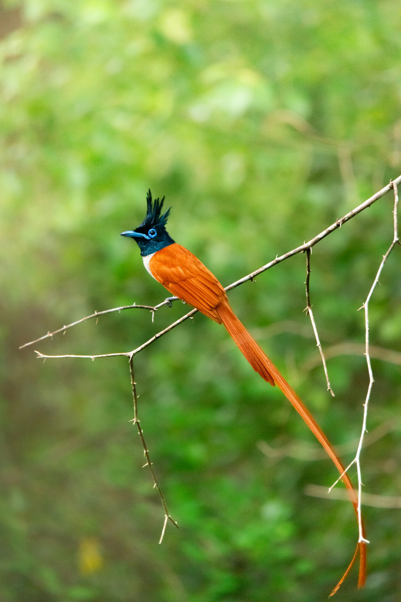

The Indian Paradise Flycatcher is an elegant insect-eating bird famous for the extraordinary long tail streamers of adult males. Males may occur in striking white or rufous plumage, while females are generally shorter-tailed and more subdued in appearance. The species inhabits forests, woodland, gardens, plantations, and shaded areas where flying insects are abundant. It hunts by making rapid aerial sallies from branches, catching insects in mid-air before returning to a perch. Its graceful movements, flowing tail, and contrasting plumage make it one of the most spectacular small birds of South Asian forests.
Family: Monarchidae